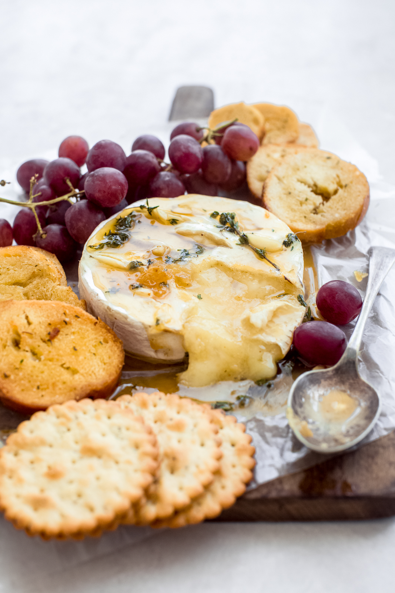

Herb Garlic Baked Brie
Description
Crispy shrimp are coated in a dreamy, creamy honey sauce and topped with candied walnuts. A total showstopper and so much better than takeout! Love easy dinner recipes?
Ingredients
- Brie wheel
- Baguettes sliced
- 5 Garlic cloves
- 2 Tbsp Butter
- Chili flakes
- Thyme
- 2 Apples
Steps
- Mince the garlic
- Checkerboard score the brie cheese wheel and set aside in a baking dish
- Heat up the butter and lightly sauté the garlic
- Preheat oven to 350°F
- Spread the butter garlic mixture evenly over the scored cheese
- Place baking dish in oven and bake for 10-15 minutes (or until nice and bubbly)
- While cheese is baking, toast the sliced Baguettes
- Once cheese is ready, season with some chili and thyme
- Drizzle honey on top of cheese
- Enjoy